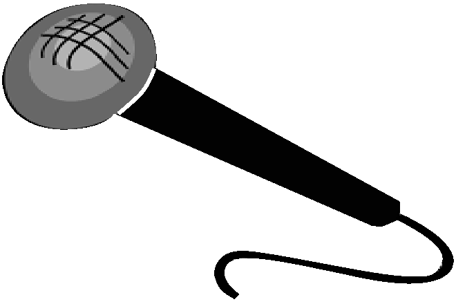

B-Ball and more
Join B-Dawg, the worldwide phenomenon, on a cool rap or an epic adventure

One of a kind
B-Dawg is the ONLY hip edgy conservative Jewish rapper/basketball player

Proudly patriotic
B-Dawg is a proud patriot who supports the great nation of America

Who is B-Dawg?
Now a worldwide phenomenon, B-Dawg was born on July 4, 1942. He is the ONLY hip edgy conservative rapper, and is known for being a great basketball player, kung fu master, gun expert, swordsman, DJ, and all-around AWESOME dude! He has lots of confirmed combat kills, has won the Noble Award For Rap and, has sung with DJ MC Rap (The Creator Of Rap). His Uncle Larry served as a Special Forces Ninja in Commie Germany during WW2, where he was on a mission to kill King Commie Hans Hitler. This passionate hatred for all things communism has continued with B-Dawg, as B-Dawg and his Mad Skillz Crew have engaged in combat with the current King Commie, Ivan Evilovski, multiple times. They haven't been able to stop him just yet, but they have hit him hard and are trying as hard as they can to kill this evil man once and for all.